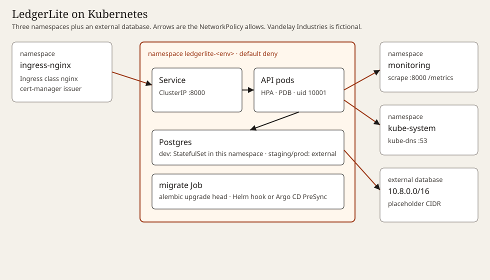

KubeHarbor
Back to portfolio · Case study & README
Architecture

The same drawing is architecture.svg.

Environments
| Environment | Replicas | HPA | API resources | PDB | Database | ServiceMonitor | Issuer | Image | Helm matches Kustomize |
|---|---|---|---|---|---|---|---|---|---|
| dev | 1 | off | 50m/64Mi → 250m/256Mi | none | inCluster | off | letsencrypt-staging | ghcr.io/OWNER/ledgerlite:0.1.0 | yes |
| staging | 2 | 2–4 | 100m/128Mi → 500m/256Mi | minAvailable 1 | external | on | letsencrypt-staging | ghcr.io/OWNER/ledgerlite:0.1.0 | yes |
| prod | 3 | 3–10 | 250m/256Mi → 1/512Mi | minAvailable 2 | external | on | letsencrypt-prod | ghcr.io/OWNER/ledgerlite@sha256:deadbeefdeadbeefdeadbeefdeadbeefdeadbeefdeadbeefdeadbeefdeadbeef | yes |
dev → prod
Checks recorded at build time
Recorded at 2026-10-04T03:20:04+08:00. Tool versions are read from the binaries. Kubernetes schemas are the 1.30.14 standalone-strict set; kubeconform v0.6.7 rejects the version token 1.30.x, so the run uses 1.30.14.
helm lint v3.16.4+g7877b45
- dev: 0 errors, exit 0
- staging: 0 errors, exit 0
- prod: 0 errors, exit 0
helm unittest 0.7.2
6 suites passed, 26 tests passed, 0 tests failed.
- dev renders one replica and the dev resource sizes
- staging renders two replicas
- prod image is a digest and not a tag
- dev renders neither HPA nor PDB
- staging HPA bounds
- staging PDB minAvailable is 1
- prod HPA is 3-10
- prod PDB minAvailable is 2
- dev TLS host and staging issuer
- staging issuer stays letsencrypt-staging
- prod issuer is letsencrypt-prod
- dev default deny and postgres ingress
- staging has no postgres ingress policy and uses the external cidr
- prod still allows prometheus to scrape port 8000
- dev inCluster renders the StatefulSet
- dev headless Service uses clusterIP None
- dev backup CronJob keeps seven dumps
- dev backup PVC is rendered
- staging external does not render StatefulSet
- staging external does not render the backup CronJob
- prod external does not render StatefulSet or CronJob
- dev ServiceMonitor is off and prod is on
- prod renders ServiceMonitor
- fails when existingSecret is empty and external secrets are off
- external secrets render an ExternalSecret without an existingSecret
- dev secret name is the values reference not a literal url
kubeconform v0.6.7
- helm_dev: valid 19, invalid 0, errors 0, skipped 0
- helm_staging: valid 17, invalid 0, errors 0, skipped 0
- helm_prod: valid 17, invalid 0, errors 0, skipped 0
- kustomize_dev: valid 19, invalid 0, errors 0, skipped 0
- kustomize_staging: valid 17, invalid 0, errors 0, skipped 0
- kustomize_prod: valid 17, invalid 0, errors 0, skipped 0
- externalsecret: valid 20, invalid 0, errors 0, skipped 0
- argocd: valid 5, invalid 0, errors 0, skipped 0
kube-linter 0.7.6
Errors: 0. Exit code 0.
kube-linter exclusions: 0. No check is excluded; the default rules passed.
checkov 3.2.449
Passed 2115, failed 0, skipped 61. Skipped counts findings from a run with no skip flags whose check id is in the skip list. 4 skip rules are configured. Scans: Kubernetes framework on rendered/ and gitops/, Helm framework on the chart with values-dev.yaml.
- rendered: passed 1774, failed 0, skipped 42
- gitops: passed 0, failed 0, skipped 0
- helm chart: passed 341, failed 0, skipped 19
CKV_K8S_35LedgerLite reads `DATABASE_URL` from the environment, and the postgres:16-alpine image reads `POSTGRES_USER`, `POSTGRES_PASSWORD`, and `POSTGRES_DB` from the environment. The chart only references keys with `secretKeyRef`. It never places a secret value in values or in a rendered Secret.CKV_K8S_40The API container runs as uid 10001. The postgres:16-alpine image's `postgres` user is uid 70, and the StatefulSet and backup CronJob use that uid so the image can write its data directory. Forcing a uid above 10000 would not match the image's ownership. The check fires only on those Postgres workloads.CKV_K8S_43Only the prod API image is digest-pinned, and that digest is a documented placeholder (`sha256:deadbeef` repeated). Dev and staging use the tag `0.1.0`. The in-cluster Postgres image is `postgres:16-alpine`. helm-unittest asserts the prod digest. This check cannot be limited to one environment.CKV_K8S_21The chart sets `metadata.namespace` from `Release.Namespace`. The six committed renders pass `--namespace ledgerlite-<env>`. Checkov's Helm runner calls `helm template` without `--namespace`, so it reports the default namespace. The Kubernetes-framework scan of `rendered/` does not report this check.
pytest pytest 8.3.5
Passed 17, failed 0.
Security baseline
- passed
test_run_as_non_root— Every workload sets runAsNonRoot, and the API user is 10001. - passed
test_read_only_root_fs— Every container sets readOnlyRootFilesystem. - passed
test_no_privilege_escalation— Every container sets allowPrivilegeEscalation to false. - passed
test_drop_all_capabilities— Every container drops the ALL capability. - passed
test_seccomp_runtime_default— Every workload sets seccompProfile RuntimeDefault. - passed
test_requests_and_limits— Every container sets cpu and memory requests and limits. - passed
test_api_probes— The API container has startup, liveness, and readiness probes. - passed
test_image_pins— No image uses the latest tag or omits both a tag and a digest. - passed
test_no_host_namespaces_or_hostpath— No hostNetwork, hostPID, hostIPC, hostPath, or privileged. - passed
test_automount_service_account_token_false— Every workload sets automountServiceAccountToken to false. - passed
test_default_deny_network_policy— Each render includes a default-deny ingress and egress NetworkPolicy. - passed
test_no_plaintext_secret— No render contains a Secret object or a stringData map.
Rendered manifests
Pygments highlighted these at build time. Each page groups objects by kind.
- helm dev (19 objects)
- helm staging (17 objects)
- helm prod (17 objects)
- kustomize dev (19 objects)
- kustomize staging (17 objects)
- kustomize prod (17 objects)
Downloads
The chart archive is from helm package. The YAML files are the Helm renders, not the Kustomize renders.
Install snippets
These are the commands a cluster would use. They were not run here. There is no live cluster in this demo.
Helm
helm install ledgerlite charts/ledgerlite \ --namespace ledgerlite-dev --create-namespace \ -f charts/ledgerlite/values-dev.yaml
Kustomize
kubectl apply -k kustomize/overlays/dev
Argo CD
kubectl apply -f gitops/argocd/project.yaml kubectl apply -f gitops/argocd/app-of-apps.yaml
Prod automation is disabled in gitops/argocd/app-prod.yaml. Prune and selfHeal stay on. The files are not applied.